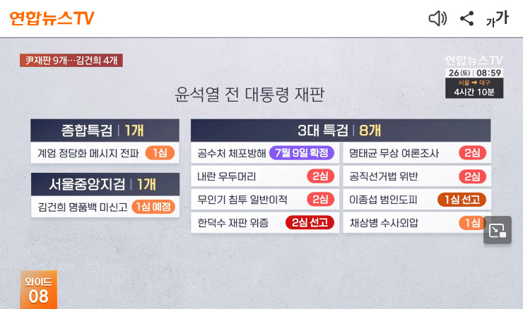
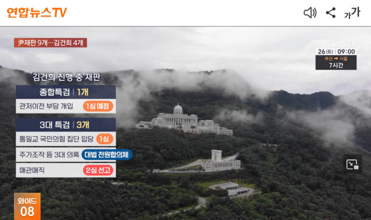
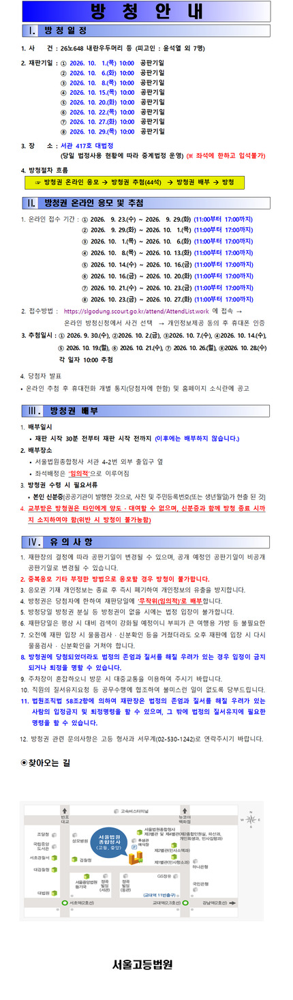

26. 9. 26
(再揭) クロネコヤマトについてもう一度書いておくと、噂を流していたと思われる契約社員(灰色の制服を着た社員)は関西ゲートウェイ(茨木にあるセンター)にて私が派遣社員として夕方から午後10時頃まで働いていた際に、クールでないフロアのA(アルファ)ブロックにいた方です。私が韓国のLeeさんと結婚した場合にどのような仕事をするのかは分かりませんが、場合によってはクロネコヤマトが困ることになるかも知れません。最近気になっているのはクロネコヤマトのドライバーの方々です。恐らく私が買い物等に出かける時刻は把握されていると思いますが、あまりに頻繁に見かけるので本来の業務指示を無視して私を偵察しに来ているのではないかとも思います。
先の聯合ニュースTVの映像には現時点での尹夫婦の裁判一覧が出てきます。


尹재판 10개 중 확정 1개뿐…김건희는 전합 심리
https://m.yonhapnewstv.co.kr/news/MYH2026092610150799L
저의 냉동고 내에 있는 돼지고기는 업무 마트서 살 수 있으니 한번 조사해 보세요.
어제 제가 한 디저트에 관한 이야기는 다음과 같은 소식과는 무관합니다. (이 코스에 있는 음식은 다 맛있게 보이네. 이런 일은 아마 중국 분들 사이에 있어서도 화제가 된 일일 거예요) 진한 음식이 적다면 아마 건강에 배려했기 때문입니다.
The first lady helped craft the evening's menu, which was served on the red china from Ronald Reagan's presidency. It featured a first course of yellow squash velouté with wild mushrooms, fresh herbs, crispy pancetta and drizzled scallion oil. After that, guests got sesame-crusted sea bass with braised baby bok choy, roasted garden eggplant and a sauce verte. Dessert was vanilla crémeux with sour cherry confit and walnut frangipane, as well as ice cream with honey from the White House.
Trump's state dinner for Xi features sea bass and a long list of tech titans
https://www.npr.org/2026/09/25/g-s1-144973/trump-state-dinner-xi
下記は尹夫婦の刑の確定状況についての記事です。ここにあるように尹前大統領は1件(特殊公務執行妨害)のみ大法院まで行って刑が確定しています。金建希はまだ1つも確定しておらず、全員合議体(전합)で判決が出ればようやく1つ刑が確定します。昨日書いたように刑が確定しないと拘置所での拘束期間が満了後釈放される恐れがあります。
尹재판 10개 중 확정 1개뿐…김건희는 전합 심리
https://m.yonhapnewstv.co.kr/news/MYH2026092610150799L
韓国でこのところ話題になっている「大法官欠員問題」が金建希の最高裁判決が遅延していることと関係しているという主張は先日김성수大法官任命と同時に金建希の第1回審理期日が指定されるまではニュース記事等に書かれていましたので、その説を私も信じていました。ただ9月7日に이흥구前大法官が退任するまでの期間は現在と同様欠員1名の状態でしたから、どうしてその時期に判決を下さなかったのだろうか、という疑問があります。その期間にも(3月に退任した)노태악前大法官の後任問題を巡って조(曺)희대大法院長と李在明大統領との衝突(これは現在まで続くものです)があったのでそれが関係しているようにも思われますが、よく分かりません。普通に考えると全員合議体で審理をする際には一定期間(つまり判決を下すのに必要な期間)は大法官の構成が変化しないことが望まれると思います。(これについてはまた考えてみます)
앞서 말한 바와 같이 내일부터 이런 식으로 영상 등을 내기가 어렵게 되니까 해야 하는 일은 이날 중에 하기로 합니다. 오늘도 오전 10시경에 마르야스에 가요.
🌝 26. 9. 25 Merry Chuseok!
裁判所のサイトは復旧し、下記の傍聴案内も閲覧出来るようになりました。
2026노648(내란우두머리 등) 온라인 방청권 추첨 안내
https://slgodung.scourt.go.kr/dcboard/new/DcNewsViewAction.work?seqnum=20951&gubun=41

제가 어젯밤에 꾼 이상한 꿈에 대해서 다음과 같이 설명을 해 보요. 그 꿈 속에서 저는 한 학교를 졸업하기 전의 신분였는데 한 선생님이 저에게 한 종류의 육체 노동을 향해 제가 고용될 수 있는 일도 있으니 바로 노숙자가 될 필요는 없겠다고 하셨습니다. 저는 너무 스트레스가 있기 때문에 일을 하지 않고 당신과 다시 만날 수 없을 경우 그대로 죽는 것이 좋다고 하고 있었는데요. 물론 제가 마지막까지 살아 가지 않을 리가 없습니다. 저녁 식사 할 때 마지막에 진짜 맛있는 디저트가 날 수도 있는데도 단지 지금 밥상 상에 있는 음식이 너무 맛없다는 이유로 레스토랑을 떠나면 바보와 같은데요. 제가 오늘 아침에 식사 하기 위해 사용한 밥상은 전에 차례상으로 사용하던 일입니다. 저는 이미 세상을 떠나기 전의 상태에 있는지도 모르지만 사랑의 불이 저의 생명을 유지하고 있답니다. 역시 반말은 저에게 어렵네. 제가 여전히 살아 있는 더 다른 이유는 제가 육감을 가지고 있기 때문이지만 어젯밤에 꾼 꿈은 대만 유사와 무관했습니다.
今朝高齢の方が私にバケツで水をかけようとなさったのはこれと関係があるのかも知れませんが、中日関係が悪化したことの元凶が「中国の核心的利益の核心」である台湾問題に高市首相が介入しようとなさったことであることは下記記事からも明らかだと思います。「有識者の役割に期待する」というのも要するに世間の皆様があまりに無知なのでどうして中国政府が怒っているかを理解できず、いつまでも高市首相を支持なさるからだと思います。皆様は韓国のチュソクについてご存知でなかったようですが、これは即ち中国の中秋節についても知らないという事を意味します。
(9. 25) 駐日・中国大使 祝賀レセプションで日中関係の正常化に向け「有識者」役割に期待
https://www.fnn.jp/articles/-/1120530
下記記事(映像)は日本ではこれがTsukimiと呼ばれていると述べています。
Lolana @ Asian Games | Different mid-autumn stories under same moon
https://english.news.cn/20260925/e4d479101976415388bd9d044ff1a3c3/c.html
この記事の写真で習主席とトランプ大統領がお揃いのネクタイをされているのは米中友好を表現しようとしたものではないかと思っています。(よく分かりませんが赤と青が両国の何かを表し、紫がその融合色であるからかも知れません)
At Trump meeting, Xi Jinping lays out terms to avoid US-China military conflict
https://www.theguardian.com/us-news/2026/sep/24/xi-jinping-trump-china-cooperation-thucydides-trap
あと9月23日付The Japan Timesの記事には'A South Korean appeals court on Tuesday reduced a prison term given to former first lady Kim Keon Hee to five years from seven over her conviction for receiving bribes during her husband's presidency,'とあったので裁判所がむやみに金建希の刑を軽くしたと思われた方もおられるかも知れませんが、appeals courtというのは控訴(2審)裁判所ですのでこれを日本語に変換すると「金建希の事件の一つについて1審で懲役7年の判決が出ていたが、2審は懲役5年の判決を出した」というだけのことなのです。この事件についても上告審(3審)が行われ、その結果刑が確定することになります。(この件についてThe Japan Timesだけが報道を許された(?)のはまず誰もこの新聞を読まないからでしょうが、上のような誤解が見込まれるからだとも思われます)
以前尹前大統領の内乱首謀事件の公判が開かれた9月17日頃に「尹前大統領が釈放されたとの噂が流れた可能性もあるので尹前大統領が収監されている拘置所の入口付近を監視する必要がある」と述べましたが、翌日開かれた一般利敵事件の下記の公判映像を見るとこれには尹前大統領は出席しておらず、여인형被告人だけが出席しているようです。この日に尹前大統領が拘置所を出ることはなかったでしょうから、一応書いておきます。
https://m.youtube.com/watch?v=OCq5VW0dIpI
裁判所のサイトが復旧するまでの繋ぎとして内容は一部重複しますが下記の記事を紹介します。これらの記事には尹夫婦の刑の確定状況についての記述も見られますが、ここにある通り金建希には確定した刑がありませんから大法院が10月末までに判決を下し刑を確定しないと拘束期間満了により釈放のおそれがあります。
윤 전 대통령은 징역 7년이 확정된 체포 방해 사건을 제외하고 8개의 형사 재판을 받고 있습니다. 김건희씨는 그제 '매관매직 의혹' 항소심 재판에서 징역 5년을 선고받았습니다.
윤석열·김건희, 두 번째 옥중 추석…명절 특식 없고, 접견도 불가
https://news.jtbc.co.kr/article/NB12319923
윤 전 대통령은 공수처의 체포영장 집행을 방해한 혐의 등으로 대법원에서 징역 7년이 확정된 반면, 김 여사는 아직 형이 확정되지 않았다.
윤석열·김건희, 나란히 '옥중 한가위'…특식 없이 일반식만 제공
https://www.news1.kr/society/court-prosecution/6300724
今日はチュソク(秋夕)であり官民ともに休日ですから、裁判所のサイトがメンテナンス中であるのはその為かも知れません。あとまた誰かが噂を流している可能性もあるので13:00-14:00の間部屋の全てのカーテンを開放します。その間昼寝をしたりしますが私がインターネットに何も書かないからといって死んだ訳ではありません。
恐らく私が昨日「ローマ教皇」という本を借りた為に何か噂が流れたのだと思いますが、このような本を借りることはハングルで書いた文書を通して事前に予告していました。その目的は(恐らく独裁者についての本について悪戯をしたであろう)日本の方々を油断させることにありました。また韓国は日本と比べ物にならない程キリスト教の信者数が多いということは皆様もご存知だと思います。昨日書いたことが実感出来ない方は下記のゲームをプレイしてみて下さい。(ローマ教皇が出てくるステージまで行くのに少し時間が必要です)
下記はこのゲームについてのニュース記事です。
‘Operation Epic Furious: Strait to Hell’ video game installed on National Mall
https://thehill.com/homenews/administration/5875375-secret-handshake-arcade-game/
またチュソク(秋夕)というのは陰暦8月15日のことです。今年は偶々それが陽暦9月25日となりました。日本以外の国々の方々は分かっていることだと思います。
PPS: あと韓国の方々がどの程度危機感をお持ちになっているか分かりませんが、下記記事を信用するなら大法院の仕事の速度によっては金建希が釈放される可能性もあるということになります。
PS: 以前書いたことと矛盾しているようですが、10月中に判決が出ると予測される場合に短期労働(ヤマト運輸以外)をして金建希に対する最高裁判決が出てから韓国に行く可能性もあります。
下記は今日出た記事ですが、「도이치모터스 주가조작과 통일교 금품수수, 명태균 여론조사 무상수수 의혹 사건이 대법원 전원합의체에 계류 중이지만 아직 선고기일은 잡히지 않은 상태다」とあり金建希に対する最高裁判決がいつ出るかは未定だといいますから、やはり29日の審理期日が判決を伴うものとは限らないようです。ただ「법조계에서는 한 달이면 전원합의체가 결론을 내리는 데 물리적인 시간은 충분하다는 것이 중론이다」ともありますから、10月中に判決が出る可能性もあるようです。先日書いたことについてはこの辺を見極めて臨機応変に対応していこうと思います。この記事に「대법원 전원합의체는 오는 29일 김씨 사건을 심리할 예정이다. 이날 대법관들 사이에서 사건의 쟁점과 결론을 두고 어느 정도 의견이 모이느냐에 따라 향후 선고 시점도 윤곽을 드러낼 것으로 보인다」ともあるので29日の審理期日に判決が出る時点がある程度予測可能になる可能性もあるかと思います。
김건희씨의 상고심 구속기간 만료가 한 달여 앞으로 다가왔다. 도이치모터스 주가조작과 통일교 금품수수, 명태균 여론조사 무상수수 의혹 사건이 대법원 전원합의체에 계류 중이지만 아직 선고기일은 잡히지 않은 상태다. 대법원이 구속기간 만료 전 결론을 내리지 않을 경우, 김씨는 이 사건으로는 더 이상 구속 상태를 유지할 수 없다. 법조계에서는 한 달이면 전원합의체가 결론을 내리는 데 물리적인 시간은 충분하다는 것이 중론이다. 다만 대법관들의 의견이 첨예하게 갈린다면 구속기간이 임박했다는 이유만으로 결론을 서두르기는 어렵다는 의견도 나온다. (中略) 법조계에서는 구속기간 만료 전 선고 가능성도 열려 있다는 분석이 나온다. 한 고등법원 부장판사는 "물리적으로 한 달이 남았기 때문에 선고가 어렵다고 볼 이유는 전혀 없다"며 "대법원은 1·2심처럼 법정에서 변론을 종결하면서 언제쯤 선고하겠다고 알리는 구조가 아니다"라고 설명했다. 그러면서 "전원합의체 선고기일을 한 달 전부터 미리 발표하는 것도 아니기 때문에 지금 선고기일이 잡히지 않았다는 것만으로 판단하기는 어렵다"고 덧붙였다. 그동안 전원합의체 심리의 변수로 꼽혔던 대법관 공석 문제에도 일부 매듭이 풀렸다. 김성수 신임 대법관이 지난 21일 공식 취임하면서 대법관 공석은 2자리에서 1자리로 줄었다. 법조계에서는 남은 한 자리 공석도 전원합의체 심리를 늦출 사유는 아니라는 의견이 나온다. 한 판사는 "대법관 한 명이 공석이라고 해서 전원합의체 심리가 미뤄지지는 않을 것"이라고 예상했다. 또 다른 부장판사도 "대법관 한 명이 빠진 상태에서 전원합의체가 진행되는 것은 드문 일이 아니다"라며 "대법관 교체나 해외 출장 등으로 한 명이 빠지는 경우가 있을 수 있기 때문에 한 자리 공석 자체가 큰 문제는 아니다"라고 짚었다. 결국 관건은 대법관들의 합의가 어느 단계까지 진행됐느냐다. 물리적으로는 한 달 안에 선고가 가능하지만 대법관들의 의견이 첨예하게 갈려 추가 검토가 필요하다면 상황은 달라질 수 있다. 대법원 전원합의체는 오는 29일 김씨 사건을 심리할 예정이다. 이날 대법관들 사이에서 사건의 쟁점과 결론을 두고 어느 정도 의견이 모이느냐에 따라 향후 선고 시점도 윤곽을 드러낼 것으로 보인다. 구속기간 만료 전 선고 여부를 가늠할 분수령인 셈이다.
김건희 석방 시계 한달 앞으로…재판장 조희대의 선택은?
https://www.nocutnews.co.kr/news/6582945
추석 잘 보내세요. 이 지역에 살고 있는 사람들은 이날에는 소음을 내지 않았지만 저는 이상한 꿈을 꾸었기 때문에 이런 시각에 일어났습니다. 내일부턴 더 늦게 일어날 것인데. 이제 아침밥 준비하지만 좀 시간이 필요할 거예요. 오늘은 마르야스에 오전 10시경에 갑니다.